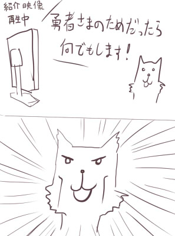

シルバーセカンド開発日誌
2015年06月
■
2015-06-27 (土) フリカツ9 紹介動画▼【振リ返リマセン勝ツマデハのお話 その9】
「不思議のクロニクル 振リ返リマセン勝ツマデハ」ですが
つい先日、商品紹介動画が上がってました！
映像は以下の通りです。
感想↓

【映像を見て】
色々と具体的な映像が出てましたね！
大きな新情報としては、ダンガンロンパやシレンとのコラボがあることや
追加ダウンロードコンテンツの配信があることなどでしょうか。
公式動画では初のボイスが入ってたり、主題歌かイメージソングが
あるっぽいので気になる方は映像をご覧ください。
特別ルール世界も定期配信とのことですので、最近主流になってきた、
「発売後、徐々にアップデートしていく形」を取るような印象です。
【おまけ情報】
またこれとは別に、シレン5plusの
ゲーム実況チャンネル（ニコニコ生放送）で
プロデューサさんが出てフリカツについていろいろ紹介しておられました。
http://live.nicovideo.jp/watch/lv224582391（ニコニコ生放送/終了）
※ニコニコ生放送のタイムシフトが見られる人は1:43:00頃からどうぞ
7月に体験版が出るっぽい話や、
そこではタイケンバン（※世界名）の世界や
チュートリアルの世界で遊べるといったことをおっしゃってたので、
もしかしたら発売日よりちょっと前に遊べる可能性があるかもしれませんね。
番組としての実況プレイ放送は7/14から始まるようです。詳細は↓
http://ch.nicovideo.jp/ch424/blomaga/ar819080
（ブログ記事・ｱｰｶｲﾌﾞ）
フリカツは動画配信もＯＫらしいので、時間があったら
私もこの機会にプレイ動画を作ってみたいなーと思ってます。
「原案者が遊ぶ振リ返リマセン勝ツマデハ」とか自己主張マンマンで！
スキャンダラスな内容にならない程度には配慮します！！
皆さまの予想よりローグライクが得意じゃないことが判明すると思います。
ということで先走ってPS Vita TVを買ってきてしまいましたが
果たして遊ぶヒマがあるのか謎です。
色々事情があって、あと何ヶ月か超忙しい状態が続きそうです。
それと話は変わりますが、
来月、7/26（日）から第七回ウディコンも開催です！
参加される方はお忘れなく。
【ウディコン公式ページ】
http://silversecond.com/WolfRPGEditor/Contest/（新ウィンドウ）
最近は色々とゲームコンテスト的なイベントが増えてきたので、
ウディコンに限らず、自分にとって一番価値があるものを
選んで出してくださいね。 ■
2015-06-20 (土) フリカツ8 新情報▼【振リ返リマセン勝ツマデハのお話 その8】
今回の振リ勝ツチェック対象はファミ通.comの新情報記事からです！
<ファミ通 新情報記事>
http://www.famitsu.com/news/201506/04079868.html （ｱｰｶｲﾌﾞ）
ワナや仲間の紹介、そして
11種類ものクラス紹介などが掲載されています。
協力NPCや通常NPC、敵やアイテムに関しては
だいたい原作と同じようです。
＜ワナ＞
スクリーンショットには、踏むと吹き飛ばされる
「丸太のワナ」が出ているんですが、一覧のほうだと書いてませんね。
「丸太のワナ」だけは状況による理不尽度が少しヤバいので、
実際にゲームに登場するかは不明です。
吹き飛び系のワナで溶岩や山の上、
およびスクロール外にも飛ばされる可能性を考えると、
実質的な即死ワナに近い存在になっちゃうので、仮に存在するならば
最初からそれらの地形には近付かない or 素振りして近付くのが
基本戦法になるかもしれません。
他にも、「装備はずし」や「アイテム飛ばし」のワナによって、
敵に追われてる状態のリスクが相当上がることも予想されます。
まあワナ全般が追われてる状態では辛いものなんですが、
敵に追いかけられている最中に上記のワナにかかると、
以下のような状況が想定されます。
「装備外し」＝裸で戦うか無防備な再装備中を狙われるか裸で逃げることに
「アイテム飛ばし」＝敵を撃退して回収するか諦めるかしないといけない
こんな感じで、装備が整った後半でも
より波乱に満ちた冒険が期待できそうです。
ごく低確率なものでも、こういった危険を考慮して遊ぶ形になるだけで
緊張感を維持しやすくなるかもしれませんね。
一時期、片道勇者のSteamストアページに
「ウォーキングシミュレータ」という
センスある英語タグの皮肉があったのを思い出します。
＜クラス＞
クラスとして、11種類が紹介されています。
私ではバランスが取れない可能性が高く、初期スキルに入れるのを
ほぼタブー視していた自己回復系スキル持ちの
「プリースト」もいたりして、
これはバランスの取り方を学ばせていただくいい機会になりそうです。
面白そうなクラス・スキルとして気になったのが、
「盗賊」の「スティール（物を盗む）」スキルなどでしょうか。
街で活躍しそうですが、やっぱり盗むと敵対するんでしょうね。
侍の「一刃」も、「使用するほど洗練される」とのことで、
原案になかったちょっと新しい仕組みの技のようです。
それとレンジャーの「ワナ作り」も従来になかったスキルのようです。
他はおおよそ既存スキルと似た印象ですね。
一部、原作で「技の伝道師」から教えてもらえていた技が
クラスの固有スキルになってるので、もしかしたら
旅の途中で教えてもらえる技もけっこう変わってるかもしれません。
あ、そういえば詩人ポジションが
「占星術師」という理術系になってるので、
無印版の詩人よりは戦えるようになっていそうですよ！
さすがにプラス版詩人のように
「通りすがりの敵ＮＰＣを仲間にする」能力は、
バランスが取りにくすぎて搭載されない気がしますが、どうでしょうね。
その辺りも楽しみです。 ■
2015-06-13 (土) 振リ勝ツ7 新情報！▼【振リ返リマセン勝ツマデハのお話 その7】
今回のチェック対象はファミ通.comのインタビュー記事からです！
<ファミ通インタビュー記事>
http://www.famitsu.com/news/201506/01079887.html （ｱｰｶｲﾌﾞ）
片道勇者からの変化として、「天空」「大森林」という地形が
追加されることなどが述べられています。
フリカツ公式サイト(ｱｰｶｲﾌﾞ)によると
「足場が少ない地形」と「森＆山が続く地形」みたいですね。
<バランス面>
バランス的には、「どれだけ強くなろうが予期せぬ事態で
ピンチに陥るシチュエーション」を生み出すべく、
シレンシリーズのノウハウをもって調整されているようです。
うまいこと死の危険性が高まる瞬間を原作より
たくさん入れてもらえると思います。
たぶんちょっと難しくなると思うので現状の原作に不満な人にはチャンス！
バランスと言えば、私が最後まであまり実現できなくて
心残りだったのが、「敵のシナジー効果」です。
風来のシレンなどだと1フロアに1匹はほぼ確実に
「単体では弱くても致命的な事態を引き起こす敵」がいて、
他の敵と一緒に出てくるとヤバいことになるように作られています。
が、片道勇者だと広すぎて色んな敵と同時に出くわしにくかったり、
ダンジョンでも一匹ずつとの戦闘になりやすかったりで、
意図はしたものの、あまりその部分が実現できませんでした。
その辺どうなってるかちょっと気になります。
地味で表には挙げられないこういった部分がプロの手で
どう面白く仕上げられているか、勉強のしがいがありそうです。
＜罠システムの搭載！＞
振リ勝ツでは「罠」システムが搭載されますが、
これは「自分も使える」というのが特徴のようです。
拾えれば「召喚の罠」や「地雷」がどこでも使えるらしいので、
街でMPK用に使うのが今から目に浮かぶようです。
逆に、LIFEギリギリで歩いたりスクロール際や溶岩付近に
近付きすぎるのは危険になるでしょう。
雑誌では「丸太の罠」（たぶん吹き飛ばされる）が紹介されていて、
プレイヤーが山の上に飛ばされていました。
溶岩に落ちれば即死、光に飲み込まれても即死なので
ギリギリの場所に行くのは原作よりかなりリスキーになりそうです。
<そして待望の？>
インタビューでは、コラボダウンロードコンテンツで
「片道勇者」というクラスが登場することが述べられています。
そしてまさかの「ゼヌーラの魔法」も登場することが判明しました！
このせいでCEROがCに突入しないか心配です。 ■
2015-06-06 (土) 振リ勝ツ6 ネムリ参戦▼【振リ勝ツにネムリ参戦！】
「不思議のクロニクル 振リ返リマセン勝ツマデハ」公式サイト(ｱｰｶｲﾌﾞ)が
更新され、キャラクター一覧が追加されました。
その中にはなんと「ネムリ」の文字が！
ということで先週の記事にあった「片道勇者から誰か1人参戦！」の
「誰か」の正解はネムリでした！
横ケモ耳を推進していきたい派としては、
もうこのキャラしかいないでしょう、という感じです。
仮にそういう趣味は置いておくとしても、
見た目のデザインとゲーム中のギミックが一番マシで、
プラス版でも優遇されてるという意味でも
ネムリをプッシュさせていただいた感じです。
なお、片道勇者「無印」での
メインヒロインポジションはフリーダ王女です。
色んな人間関係に関わっていますし、出現率も高いですからね。
しかし「この辺がベーシックなヒロイン」かなと考えて作っていたら、
ひとひねり加わったヒロインの方が人気が出てしまうのは、
シルフェイド幻想譚のスケイルやウリユのときから
繰り返されている伝統なのかもしれません。
（※シルフェイド幻想譚の当初のヒロインはシン/シズナのつもりだった）
【振リ勝ツのネムリ】
さて、振リ勝ツ版ネムリの設定面の話なんですが、
キャラ一覧では見た目的にしっぽが見えなくなってるのが特徴です。
※公式サイト(ｱｰｶｲﾌﾞ)→キャラクター より
また「主人公のファン」という設定が追加され、
仲間になる動機が補強されました。
戦闘能力のない一般人なのに、ナユタの実たった1個で
死の危険性が高い旅についてきたという意味では、
原作版のネムリはかなり剛胆でしたね！
（ネムリが半獣人になってからはどこにいっても迫害され続けていた、
という設定もありますが、その辺の表現はTRPGリプレイや
プラス版の「獣人の集落」のみにとどまっています）
「獣化の病にかかっている」ことが紹介文で明言されているので
ネムリの「あのイベント」はきっと
ほぼ似たような形で継承されているでしょう。
すでに気になっている方もおられるようですが、
声優さんが「後」のほうのネムリにも声を
あててくださっているのか私も気になります。
担当声優さんの過去の出演リストを見ると、過去に担当した役に
「リス」なんてのもあったのですが、これがしゃべるリスとかじゃなくて
マジ動物役だったりしたら声優さんの努力がしのばれるものの、
すでに実績有りということになりますね、すばらしい！
ヴォウ～ヴォウ～（もしかしたら同じ声であてられるかもしれないセリフ）
ネムリの件以外にも色々と新情報が出ているので
それらについては引き続き来週からの
記事のネタにしていきたいと思います。 2015年06月
Copyright © SmokingWOLF / Silver Second
 カテゴリ: 片道勇者
カテゴリ: 片道勇者 カテゴリ: 片道勇者
カテゴリ: 片道勇者